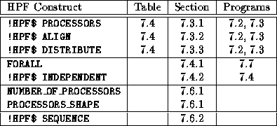

![[DBPP]](pictures//asm_color_tiny.gif)


![[Search]](pictures//search_motif.gif)
In this chapter, we have presented fundamental concepts of data-parallel programming and illustrated the application of these concepts in the programming languages Fortran 90 and High Performance Fortran. The eight HPF constructs described in this chapter are summarized in Table 7.2. These are in addition to the F90 array language described in Section 7.2.

Table 7.2: HPF quick reference: the HPF functions described in this
chapter, the section in which each is described, and the programs that
illustrate the use of each.
F90's array language and HPF's data distribution directives and related constructs provide a powerful notation for data-parallel computations in science and engineering. Their chief features are as follows:
The most attractive feature of the data-parallel approach as exemplified in HPF is that the compiler takes on the job of generating communication code. This has two advantages. First, it allows the programmer to focus on the tasks of identifying opportunities for concurrent execution and determining efficient partition, agglomeration, and mapping strategies. Second, it simplifies the task of exploring alternative parallel algorithms; in principle, only data distribution directives need be changed.
A problematic feature of HPF is the limited range of parallel algorithms that can be expressed in HPF and compiled efficiently for large parallel computers. However, the range of problems for which HPF is an appropriate tool can be expected to grow as compiler technology improves.
© Copyright 1995 by Ian Foster